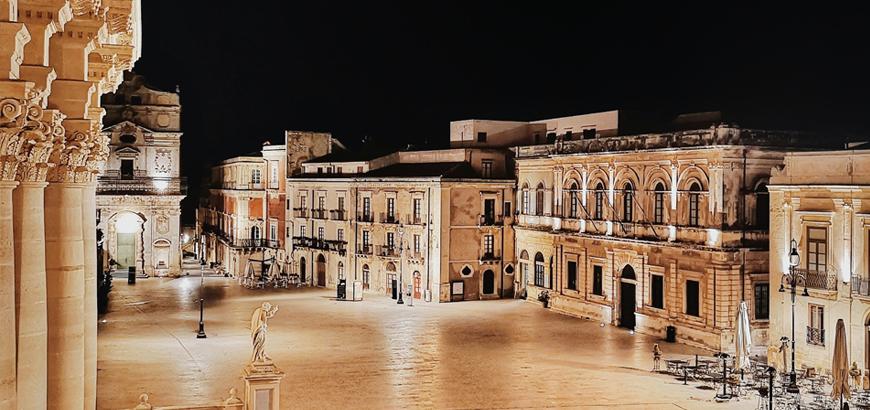
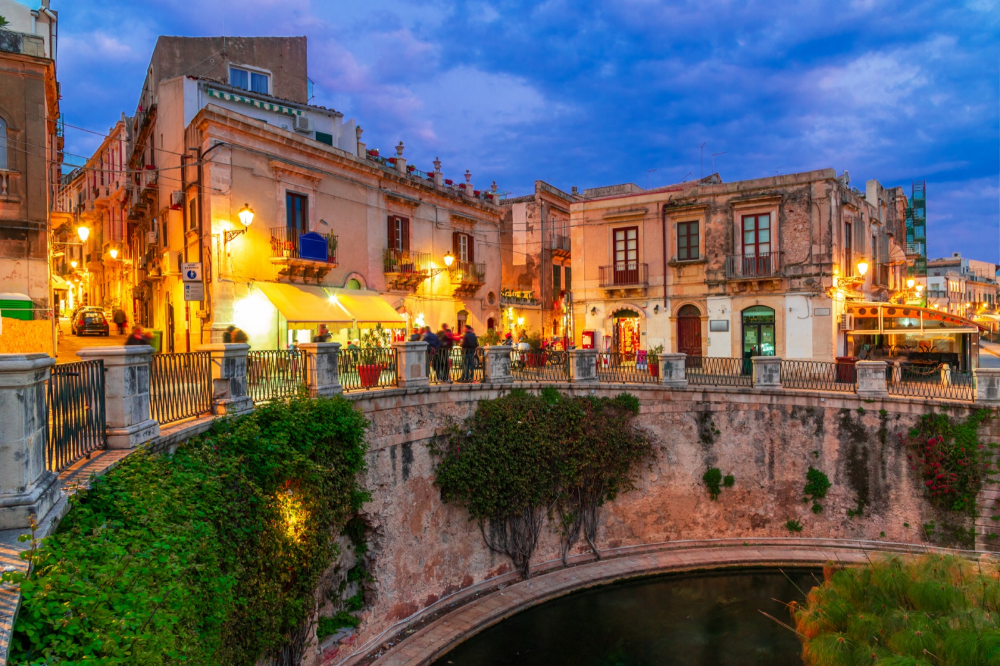

Piazza Duomo
 Siracusa
Siracusa

Siracusa è una città sulla costa ionica della Sicilia. È nota per le rovine dell'antichità. Il centrale Parco Archeologico della Neapolis racchiude l'anfiteatro romano, il Teatro Greco e l'Orecchio di Dionisio, una grotta scavata nel calcare a forma di orecchio umano. Il Museo Archeologico Regionale Paolo Orsi espone reperti in terracotta, ritratti di epoca romana e scene dell'Antico Testamento scolpite nel marmo bianco.
Posta sulla costa sud-orientale dell'isola, Siracusa possiede una storia millenaria: annoverata tra le più vaste metropoli dell'età classica, primeggiò per potenza e splendore con Atene, la quale tentò invano di assoggettarla. Fu la patria del matematico Archimede, che si pose a capo della sua difesa durante l'assedio dei Romani nel 212 a.C. Divenne capitale dell'Impero bizantino sotto Costante II. Siracusa fu per secoli la città capitale della Sicilia, fino all'invasione musulmana, avvenuta nell'878, che comportò la rovina della città in favore di Palermo. Con la conquista normanna divenne una contea normanna del Regno di Sicilia e si affermò la cristianità latina.

Siracusa